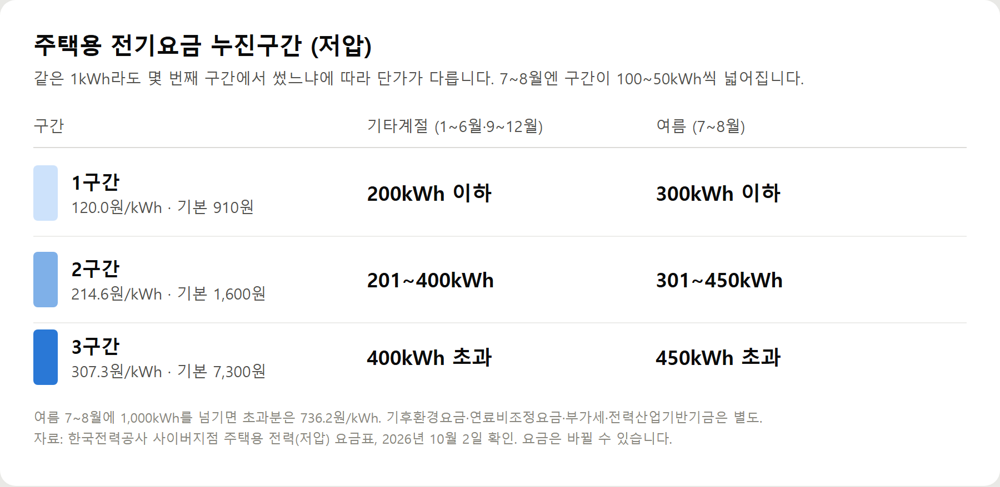
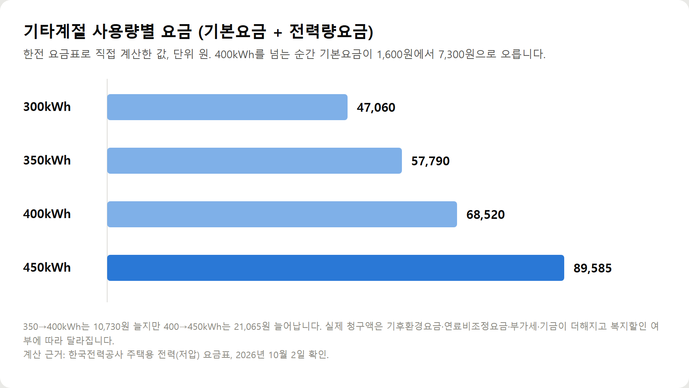

<meta charset="utf-8">
<title>전기요금 절약 방법 10가지 — 나의 투자 그리고 행복한 여행</title>
<meta name="description" content="전기요금 절약은 우리 집 누진구간을 아는 데서 시작합니다. 2026년 한전 요금표 기준 계산 예시와 에어컨·냉장고·대기전력 절약법 10가지.">
<meta name="viewport" content="width=device-width, initial-scale=1">
<link rel="canonical" href="https://worldtraveler1.tistory.com/122">
<link rel="preconnect" href="https://fonts.googleapis.com">
<link rel="preconnect" href="https://fonts.gstatic.com" crossorigin>
<link rel="stylesheet" href="https://fonts.googleapis.com/css2?family=Hahmlet:wght@400;600;800&family=IBM+Plex+Mono:wght@400;500&family=IBM+Plex+Sans+KR:wght@300;400;500;600&display=swap">

<style>
  :root{
    --paper:#F2EEE6;--surface:#FAF8F3;--surface-2:#E7E1D5;
    --ink:#191510;--ink-2:#4A4235;--ink-3:#7D7364;
    --line:#D6CEBF;--line-soft:#E4DDD0;--accent:#B06A15;--accent-bright:#C2761A;
    --up:#E5484D;--down:#3B82F6;
    --f-display:"Hahmlet",'Nanum Myeongjo',"Apple SD Gothic Neo",serif;
    --f-body:"IBM Plex Sans KR","Apple SD Gothic Neo","Malgun Gothic",sans-serif;
    --f-mono:"IBM Plex Mono","SFMono-Regular",Consolas,monospace;
    --pad:clamp(20px,5vw,64px);
  }
  @media (prefers-color-scheme:dark){
    :root:not([data-theme="light"]){
      --paper:#0B1120;--surface:#121A2C;--surface-2:#1A2439;
      --ink:#E9EEF7;--ink-2:#A9B5C9;--ink-3:#72809A;
      --line:#26314A;--line-soft:#1D2739;--accent:#E8A33D;--accent-bright:#F0B45C;
    }
  }
  *{box-sizing:border-box;}
  body{margin:0;background:var(--paper);color:var(--ink);font-family:var(--f-body);
    font-weight:300;font-size:1rem;line-height:1.75;-webkit-font-smoothing:antialiased;}
  a{color:inherit;}
  img{max-width:100%;height:auto;}
  .wrap{max-width:760px;margin:0 auto;padding-inline:var(--pad);}
  .nav{position:sticky;top:0;z-index:20;background:color-mix(in srgb,var(--paper) 88%,transparent);
    backdrop-filter:saturate(180%) blur(12px);border-bottom:1px solid var(--line);}
  .nav-in{display:flex;align-items:center;justify-content:space-between;height:58px;}
  .brand{font-family:var(--f-display);font-weight:600;font-size:1rem;letter-spacing:-.02em;text-decoration:none;}
  .back{font-family:var(--f-mono);font-size:.72rem;color:var(--ink-3);text-decoration:none;}
  .article{padding-block:clamp(40px,7vw,72px) clamp(56px,9vw,96px);}
  .eyebrow{font-family:var(--f-mono);font-size:.68rem;letter-spacing:.16em;text-transform:uppercase;
    color:var(--accent);margin:0 0 14px;}
  h1{font-family:var(--f-display);font-weight:800;font-size:clamp(1.6rem,4.4vw,2.3rem);
    line-height:1.3;letter-spacing:-.03em;margin:0 0 16px;}
  .byline{font-family:var(--f-mono);font-size:.72rem;color:var(--ink-3);
    padding-bottom:24px;border-bottom:1px solid var(--line);margin-bottom:32px;}
  h2{font-family:var(--f-display);font-weight:600;font-size:1.25rem;letter-spacing:-.02em;margin:42px 0 14px;}
  h3{font-family:var(--f-display);font-weight:600;font-size:1.05rem;letter-spacing:-.02em;
    margin:30px 0 10px;padding-top:14px;border-top:1px solid var(--line-soft);}
  h3 .code{font-family:var(--f-mono);font-size:.7rem;font-weight:400;color:var(--ink-3);margin-left:6px;}
  p{margin:0 0 18px;color:var(--ink-2);}
  ul.checks{margin:0 0 18px;padding-left:20px;color:var(--ink-2);}
  ul.checks li{margin-bottom:8px;font-size:.94rem;}
  table{width:100%;border-collapse:collapse;font-size:.88rem;margin-bottom:8px;}
  th{font-family:var(--f-mono);font-size:.66rem;letter-spacing:.06em;text-transform:uppercase;
    color:var(--ink-3);text-align:right;padding:8px 6px;border-bottom:1px solid var(--line);}
  th:first-child{text-align:left;}
  td{padding:10px 6px;border-bottom:1px solid var(--line-soft);color:var(--ink-2);}
  td.num{font-family:var(--f-mono);text-align:right;font-variant-numeric:tabular-nums;}
  td.up{color:var(--up);} td.down{color:var(--down);}
  .scroll{overflow-x:auto;}
  figure{margin:22px 0;}
  figure img{display:block;border-radius:3px;background:var(--surface-2);}
  figcaption{margin-top:8px;font-family:var(--f-mono);font-size:.68rem;color:var(--ink-3);text-align:center;}
  .note{margin-top:34px;padding:16px 18px;border-left:3px solid var(--accent);
    background:var(--surface);border-radius:0 3px 3px 0;}
  .note p{margin:0;font-size:.85rem;color:var(--ink-3);}
  .foot{border-top:1px solid var(--line);background:var(--surface);padding-block:30px 38px;}
  .foot p{margin:0;font-size:.8rem;color:var(--ink-3);}
</style>

<nav class="nav">
  <div class="wrap nav-in">
    <a class="brand" href="../index.html">나의 투자 그리고 행복한 여행</a>
    <a class="back" href="../index.html#stocks">← 시황으로</a>
  </div>
</nav>

<main class="wrap article">
  <p class="eyebrow">Market</p>
  <h1>여름·겨울 전기요금 아끼는 방법과 우리 집 점검 체크리스트 14</h1>
  <p class="byline">생활 · 2026-10-02 기준</p>

  <p><b>이 포스팅은 쿠팡 파트너스 활동의 일환으로, 이에 따른 일정액의 수수료를 제공받습니다.</b></p>
  <p><b>이 포스팅은 네이버 쇼핑 커넥트 활동의 일환으로, 판매 발생 시 수수료를 제공받습니다.</b></p>
  <p>한 줄 요약: 여름엔 에어컨, 겨울엔 전기난방, 1년 내내는 냉장고·밥솥·대기전력. 계절마다 볼 곳이 다릅니다.</p>
  <p>절감액은 집마다 달라서 숫자로 적지 않았습니다. 요금표는 2026년 10월 2일 한전 기준입니다.</p>
  <h2>한눈에 보는 요금 구조</h2>
  <figure><figcaption>주택용 전기요금 누진구간 — 기타계절과 여름(7~8월) 비교 (한전 요금표, 2026.10.2 확인)</figcaption></figure>
  <p>기타계절엔 400kWh를 넘는 순간부터 증가폭이 확 커집니다.</p>
  <figure><figcaption>기타계절 사용량별 기본요금+전력량요금 — 400kWh를 넘으면 증가폭이 두 배로 커진다</figcaption></figure>
  <h2>여름 (7~8월) — 에어컨 관리</h2>
  <ul class="checks">
    <li>설정 온도 26℃ 안팎, 선풍기로 찬 공기 순환</li>
    <li>인버터형은 짧은 외출에 켜 두기 — 재가동 때 더 셀 수 있음</li>
    <li>필터 2주에 한 번 확인, 실외기 주변 통풍 확보</li>
    <li>낮엔 커튼·블라인드로 햇빛 차단</li>
    <li>다 쓴 뒤 송풍·자동건조로 내부 말리기</li>
  </ul>
  <p>어르신·영유아·환자가 있는 집은 온도를 억지로 올리지 마세요. 절약보다 건강이 먼저입니다.</p>
  <h2>겨울 (12~2월) — 전기난방 관리</h2>
  <ul class="checks">
    <li>히터·온풍기는 앉은 자리만 짧게</li>
    <li>전기장판은 타이머+저온</li>
    <li>문풍지·커튼으로 새는 열 먼저 막기</li>
    <li>고용량 난방기는 벽 콘센트에 직접</li>
  </ul>
  <h2>1년 내내 — 상시 가전</h2>
  <ul class="checks">
    <li>냉장고: 냉장 5℃·냉동 -18℃ 이하, 뒤쪽 공간 확보</li>
    <li>밥솥: 보온 대신 소분 냉동</li>
    <li>세탁기: 찬물 코스, 모아서 세탁</li>
    <li>건조기: 탈수 충분히, 필터 매번</li>
    <li>TV·PC: 개별 스위치 멀티탭</li>
  </ul>
  <div style="text-align:center;margin:30px 0"><a href="https://link.coupang.com/a/hwuJOw9x7I" target="_blank" rel="nofollow sponsored noopener" style="display:inline-block;padding:15px 28px;background:#E34948;color:#fff;font-weight:700;font-size:18px;text-decoration:none;border-radius:8px"><b>▶ 쿠팡에서 보기 — 번개표 개별스위치 멀티탭 4구</b></a></div>
  <h2>우리 집 점검 체크리스트 14</h2>
  <ul class="checks">
    <li>□ 에어컨 필터를 최근 한 달 안에 청소했다</li>
    <li>□ 우리 집 에어컨이 인버터형인지 안다</li>
    <li>□ 에어컨 설정을 지나치게 낮게 두지 않는다</li>
    <li>□ 사용하지 않는 멀티탭 전원을 끈다</li>
    <li>□ 밥솥 보온을 반나절 넘게 켜 두지 않는다</li>
    <li>□ 냉장고 문을 자주, 오래 열지 않는다</li>
    <li>□ 냉장고 뒤쪽·위쪽에 공간이 있다</li>
    <li>□ 뜨거운 음식을 바로 냉장고에 넣지 않는다</li>
    <li>□ 건조기 필터를 매번 비운다</li>
    <li>□ 건조기를 필요 이상으로 쓰지 않는다</li>
    <li>□ 전기난방기를 장시간 켜 두지 않는다</li>
    <li>□ 조명을 LED로 바꿨다</li>
    <li>□ 월별 사용량(kWh)을 확인한다</li>
    <li>□ 우리 집이 지금 몇 구간인지 안다</li>
  </ul>
  <p>하나만 고르라면 '월별 사용량 확인'입니다. 우리 집이 몇 구간인지 알면 나머지 항목 중 뭐부터 할지 저절로 정해집니다.</p>
  <p>체크가 안 되는 항목이 많을수록 줄일 여지가 큰 집입니다. 가전별 사용량이 궁금하면 전력 측정 플러그로 하나씩 재 보세요.</p>
  <div style="text-align:center;margin:30px 0"><a href="https://naver.me/5suTqjzb" target="_blank" rel="nofollow sponsored noopener" style="display:inline-block;padding:15px 28px;background:#E34948;color:#fff;font-weight:700;font-size:18px;text-decoration:none;border-radius:8px"><b>▶ 네이버에서 보기 — 티피링크 Tapo P115 에너지 모니터링 스마트 플러그</b></a></div>
  <div style="text-align:center;margin:30px 0"><a href="https://worldtraveler1.tistory.com/122" target="_blank" rel="nofollow sponsored noopener" style="display:inline-block;padding:15px 28px;background:#E34948;color:#fff;font-weight:700;font-size:18px;text-decoration:none;border-radius:8px"><b>▶ 원문에서 전체 내용 보기 — 전기요금 절약 방법 10가지</b></a></div>
  <h2>참고자료</h2>
  <ul class="checks">
    <li>한국전력공사 사이버지점 — 주택용 전력(저압) 요금표 (cyber.kepco.co.kr, 2026.10.2 확인)</li>
    <li>식품의약품안전처 — 냉장 5℃ 이하·냉동 -18℃ 이하 보관 기준</li>
  </ul>
  <div class="note"><p>요금표는 2026년 10월 2일 한국전력공사 사이버지점 기준이며 바뀔 수 있습니다. 예시 금액은 기본요금과 전력량요금만 계산한 것으로, 실제 고지서에는 기후환경요금·연료비조정요금·부가세·전력산업기반기금이 더해지고 복지할인 여부에 따라 달라집니다. 가전별 소비전력은 제품마다 크게 달라서 숫자로 일반화하지 않았습니다. 우리 집 제품의 라벨이나 설명서를 확인하세요.</p></div>
  <p style="font-size:12px;color:#999;line-height:1.6;margin-top:36px">이 포스팅은 쿠팡 파트너스 활동의 일환으로, 이에 따른 일정액의 수수료를 제공받습니다.</p>
  <p style="font-size:12px;color:#999;line-height:1.6;margin-top:36px">이 포스팅은 네이버 쇼핑 커넥트 활동의 일환으로, 판매 발생 시 수수료를 제공받습니다.</p>
</main>

<footer class="foot">
  <div class="wrap"><p>나의 투자 그리고 행복한 여행 · 투자 판단의 참고 자료일 뿐, 매수·매도를 권유하지 않습니다.</p></div>
</footer>
